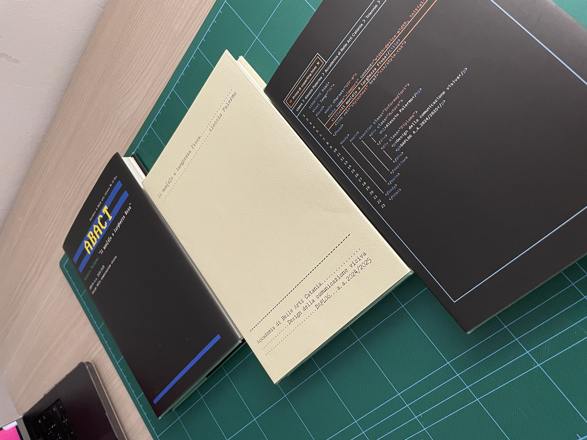
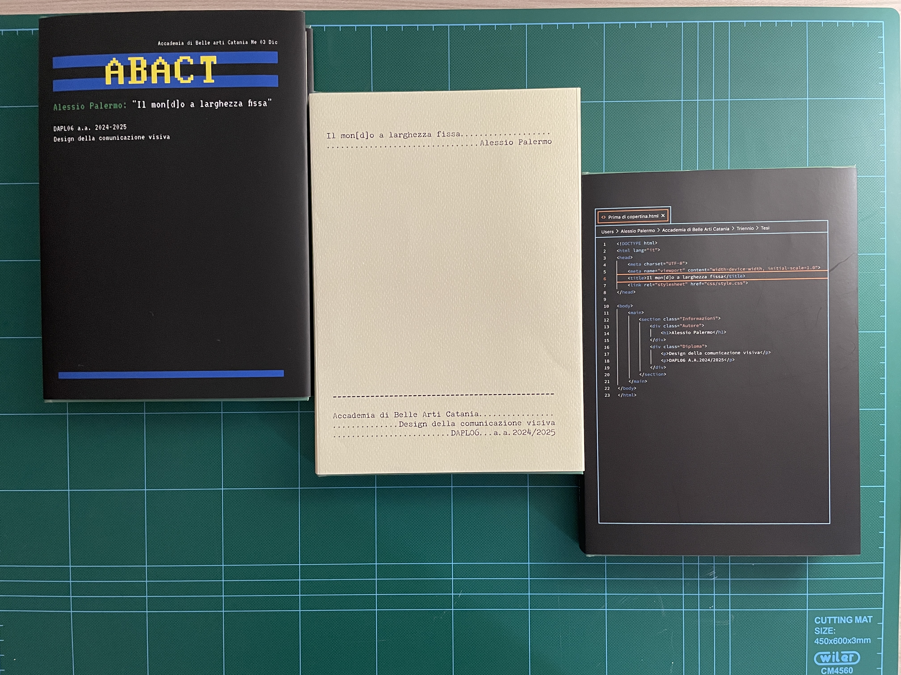
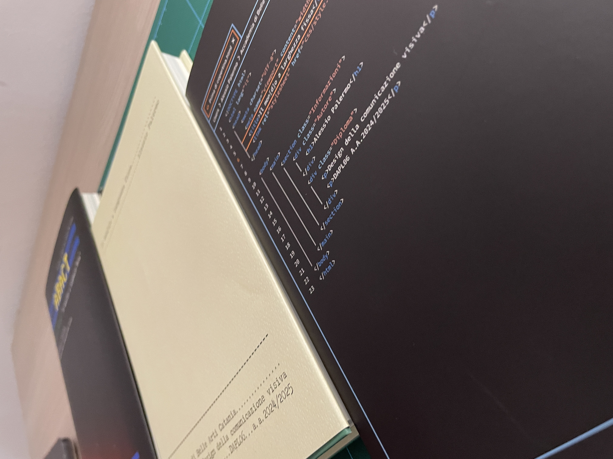

La tesi esplora l'evoluzione e la progettazione dei caratteri monospaziati, analizzandone lo sviluppo storico e tecnico. Dalle prime forme di scrittura fino all'era digitale, il lavoro indaga come la relazione tra forma, mezzo e tecnologia abbia influenzato la nascita e la diffusione dei caratteri a larghezza fissa.
Attraverso l'analisi delle principali tappe storiche e delle caratteristiche tecniche dei monospaziati, la ricerca evidenzia le sfide progettuali legate allo sviluppo di questi caratteri, dal mantenimento dell'equilibrio visivo all'ottenimento di una leggibilità ottimale.
Inoltre viene fatta un'analisi su come essi vengano utilizzati nella progettazione grafica contemporanea. Il risultato è una riflessione sul valore dei monospaziati, come sintesi tra funzionalità ed estetica.


